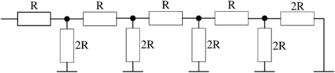
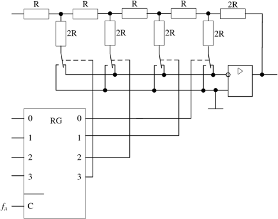
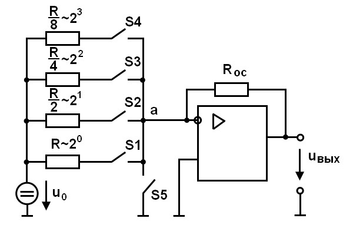
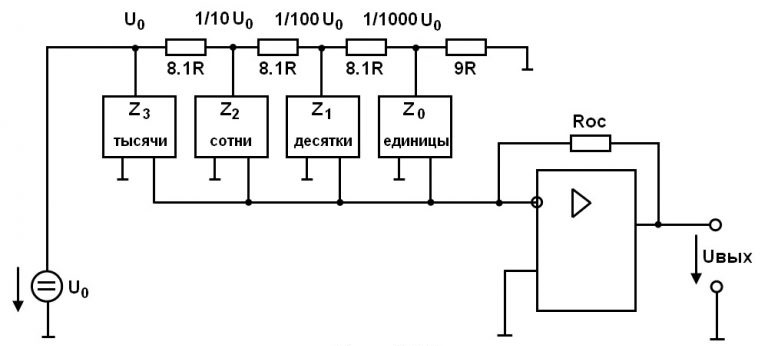
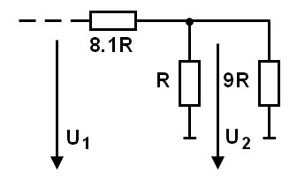

Цифроаналоговые преобразователи R-2R
Цифроаналоговый преобразователь с взвешиванием токов прост для понимания принципов работы, однако обладает рядом недостатков. Первый из них это требование к высокой точности изготовления резисторов. Если разброс тока старшего разряда окажется больше значения тока младшего разряда, то ЦАП не будет выполнять свою функцию.
Второй недостаток связан с влиянием паразитных емкостей схемы. При больших разрядностях ЦАП с взвешиванием токов приходится применять высокоомные резисторы. Это приводит к большому времени заряда и разряда паразитной емкости микросхемы, что ограничивает ее быстродействие.
Ну и, наконец, сами резисторы. Высокоомные резисторы занимают огромную площадь на кристалле микросхемы. Все эти недостатки привели к поиску другого схемотехнического решения цифроаналогового преобразователя. Таким решением стало применение матрицы R-2R. Принцип формирования опорных напряжений матрицей R-2R приведен на рисунке ниже.
Принцип формирования опорных напряжений матрицей R-2R
В матрице резисторов R-2R формируется ряд напряжений, отличающихся друг от друга ровно в два раза. Рассмотрим этот механизм. В конце резистивной цепочки находятся два резистора с сопротивлением 2R. Эти резисторы одним концом соединены друг с другом, другие концы присоединены к корпусу схемы, то есть резисторы соединены параллельно. В результате их общее сопротивление равно R. При соединении резистора R и параллельного соединения двух резисторов 2R образуется делитель напряжения с коэффициентом деления 2. В результате напряжение на его выходе будет в два раза меньше напряжения на его входе. Общее сопротивление делителя составляет 2R, так как сопротивления R в нем соединены последовательно. В результате в следующем звене матрицы ситуация повторяется. Снова образуется параллельное соединение двух резисторов 2R и снова образуется делитель напряжения в два раза. Так как напряжения в узлах матрицы R-2R отличаются друг от друга ровно в два раза, то и ток через резисторы 2R будет отличаться ровно в два раза, то есть подчиняться двоично му закону. Если теперь эти токи подавать или не подавать на вход сумматора токов в зависимости от входного двоичного числа, то мы получим цифроаналоговый преобразователь. Схема подобного цифроаналогового преобразователя с применением матрицы R-2R приведена на рисунке ниже
Принципиальная схема четырехразрядного цифро-аналогового преобразователя R-2R
Схема ЦАП с суммированием весовых токов
На картинке справа приведена схема ЦАП с суммированием весовых токов. 
Ключ S5 замкнут только тогда, когда разомкнуты все ключи S1…S4 (при этом uвых= 0). U0 — опорное напряжение. Каждый резистор во входной цепи соответствует определенному разряду двоичного числа. По существу этот ЦАП — инвертирующий усилитель на основе операционного усилителя. Анализ такой схемы не представляет затруднений. Так, если замкнут один ключ

Состояние ключей определяется входным преобразуемым кодом. Схема проста, но имеет недостатки: значительные изменения напряжения на ключах и использование резисторов с сильно отличающимися сопротивлениями. Требуемую точность этих сопротивлений обеспечить затруднительно.
ЦАП для преобразования двоично-десятичных чисел
Рассмотрим ЦАП для преобразования двоично-десятичных чисел на картинке ниже
Для представления каждого разряда десятичного числа используется отдельная матрица R − 2R (обозначены прямоугольниками). Z0…Z3 обозначают числа, определенные состоянием ключей каждой матрицы R − 2R. Принцип действия становится понятным, если учесть, что сопротивление каждой матрицы R, и если выполнить анализ фрагмента схемы, представленного на рисунке ниже.
Параметры ЦАП
| Тип ПЗУ | Быстродействие, нс | Потребляемая мощность, М Вт/бит | Информационная ёмкость, Кбит |
|---|---|---|---|
| ПЗУ и ППЗУ на биополярных структурах | 15-150 | 0,01-0,8 | < 64 |
| ПЗУ и ППЗУ на МОП-структурах | 70-40000 | 0,01-0,3 | < 256 |
| РПЗУ | 50-1500 | < 0,1 | < 256 |